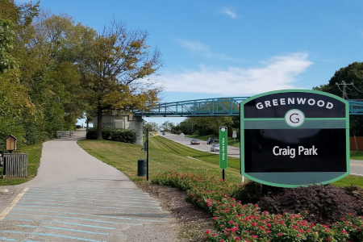
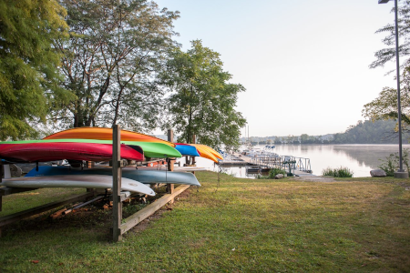
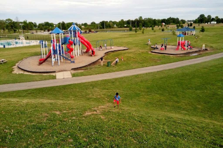
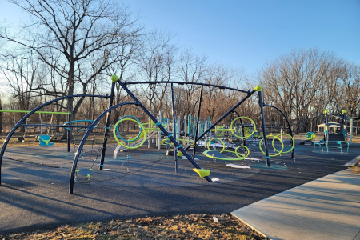
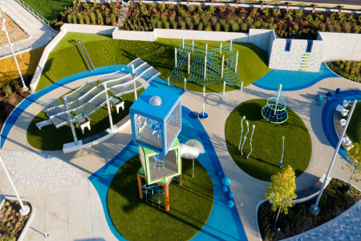

Craig Park
"Really close to a major town road, has a whole looping trail around all 27 acres, but again a little too close to the road for my comfort, but I see a lot of people walking it when I dirve by myself, and they have beautiful art pieces all throughout the trail that blend in really well with nature." -Alicia

Eagle Creek Park
"Has FANTASTIC amenities, one being a bird preserve that I absolutely love. I have been kayaking here, hiking here, tree climbing here, and zip-lining here. I couldn't ask for a better place to go for a fantastic place outdoors. I never worry about the money that these places cost, because I know it's all going to the conservation of this wonderful place." -Alicia

Freedom Park
"I have mixed emotions for the park. Their water patrk always seems to busy for me to enjoy, but I love walking around here during the cold season. I bring my dogs almost daily. It's a very simple park to get to, and it has plenty of walkways and a pretty pond to look at. It also has a pretty popular dog park, which seems fun too." -Abigail

Independence Park
"This is somewhere I love to take my nieces and nephews on occasion. With a fun looking playground like this, who wouldn't want to play?" -Abigail

Old City Park
"This is truly what a modern-day park embodies. Always, always crazy busy during the summer, and if you ever see it in person, you can tell why. Fantastic things for the kids to do, and some good exercise for the adults. It's right next to the local library. I spend a lot of my time studying outside around this area." -Alicia